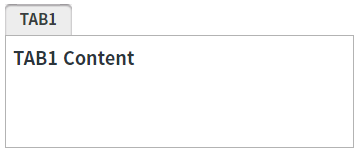
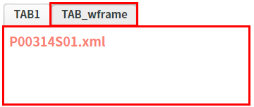
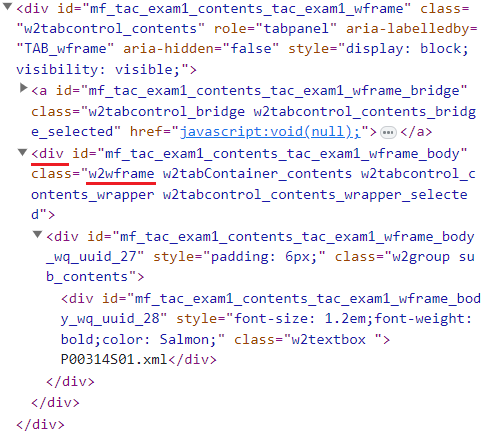
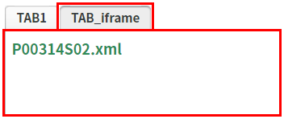
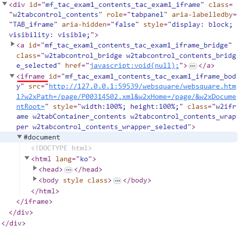

TabControl의 함수 'addTab'의 세 번째 인자 JSON 객체의 'wframe' 설정 값 비교 예제입니다.
콘텐츠 옵션 'wframe'의 설정 값에 따른 동작 방식은 다음과 같습니다.
false : (기본 값) 콘텐츠 영역이 iframe으로 구성됩니다.
true : 콘텐츠 영역이 wframe으로 구성됩니다.
'wframe'의 권장 설정 값은 false입니다.
true로 설정한 경우보다 브라우저 메모리 사용량이 낮고 콘텐츠 로딩 속도가 빠르며 부모(상위) 화면에 더 쉽게 접근할 수 있습니다.
탭 추가 - 콘텐츠 옵션 'wframe'의 설정 값을 true로 지정
탭 추가 - 콘텐츠 옵션 'wframe'의 설정 값을 false로 지정
STEP 1. 초기 상태를 확인합니다.
TabControl에 탭 'TAB1'이 구성되어 있습니다.
그림 1.브라우저(Chrome) 실행 예시

STEP 2. 탭을 추가합니다.
버튼 탭 추가하기 - 콘텐츠 옵션 'wframe'을 true로 설정을 클릭합니다.
함수 'addTab'이 다음과 같은 인자로 호출됩니다.함수 'addTab'의 인자
"tac_exam1_wframe", { "label": "TAB_wframe", "openAction": "select" }, { "src": "/page/P00314S01.xml", "wframe": true }
STEP 3. 실행된 결과를 확인합니다.
탭 'TAB_wframe'이 추가됩니다. 탭의 콘텐츠가 WFrame으로 구성됩니다.
그림 2.브라우저(Chrome) 실행 예시

그림 3.브라우저(Chrome)의 개발자 도구 탭 'Elements'

화면의 로그 확인 textarea 또는 브라우저의 개발자 도구의 콘솔(console)탭에 출력된 로그를 확인합니다.
로그
[15:18:23] # TabControl 'tac_exam1'의 함수 'addTab'의 반환 값(탭의 ID): "tac_exam1_wframe"
STEP 1. 초기 상태를 확인합니다.
TabControl에 탭 'TAB1'이 구성되어 있습니다.
그림 4.브라우저(Chrome) 실행 예시
STEP 2. 탭을 추가합니다.
버튼 탭 추가하기 - 콘텐츠 옵션 'wframe'을 false로 설정을 클릭합니다.
함수 'addTab'이 다음과 같은 인자로 호출됩니다.함수 'addTab'의 인자
"tac_exam1_iframe", { "label": "TAB_iframe", "openAction": "select" }, { "src": "/page/P00314S02.xml", "wframe": false }
STEP 3. 실행된 결과를 확인합니다.
탭 'TAB_iframe'이 추가됩니다. 탭의 콘텐츠가 IFrame으로 구성됩니다.
그림 5.브라우저(Chrome) 실행 예시

그림 6.브라우저(Chrome)의 개발자 도구 탭 'Elements'

화면의 로그 확인 textarea 또는 브라우저의 개발자 도구의 콘솔(console)탭에 출력된 로그를 확인합니다.
로그
[15:32:43] # TabControl 'tac_exam1'의 함수 'addTab'의 반환 값(탭의 ID): "tac_exam1_iframe"
TabControl의 함수 'addTab'를 이용하여 스크립트를 작성합니다. 옵션 'wframe'은 함수 'addTab'의 세 번째 인자 JSON 객체에 설정합니다. 세부 지정은 아래의 스크립트 예시에 작성되어 있습니다.
스크립트
// TabControl 'tac_exam1'에 탭 추가하기 - "wframe": true // wframe에 파일이 구성됩니다. let result = await tac_exam1.addTab( "tac_exam1_wframe", { "label": "TAB_wframe", "openAction": "select" }, { "src": "/page/P00314S01.xml", "wframe": true } ); // 반환 값 예시) 추가된 탭의 ID가 반환됩니다. // 'tac_exam1_wframe' // 콘텐츠 옵션 'wframe'의 설정 값에 따른 동작 방식은 다음과 같습니다. // - false : (기본 값) 콘텐츠 영역이 iframe으로 구성됩니다. // - true : 콘텐츠 영역이 wframe으로 구성됩니다.
addTab( id , tabOpt , contOpt )
contOpt.wframe
[웹스퀘어5 SP5 개발 가이드] TabControl
링크 : https://docs1.inswave.com/sp5_user_guide/2059d4ce88b2fc16#0eeccc9d7fde2d33
[웹스퀘어5 SP5 개발 가이드] TabControl 탭 생성 (addTab)
링크 : https://docs1.inswave.com/sp5_user_guide/2059d4ce88b2fc16#18a2383c9b7504c2